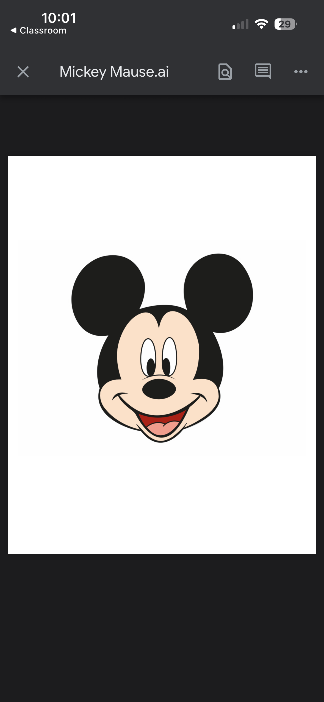
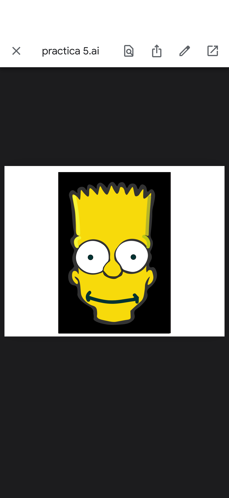

Participación 1: Panel Buscatrazos o Pathfinder
En esta actividad, elaboré un documento digital en el que describí detalladamente cada herramienta del panel Buscatrazos (Pathfinder) de Adobe Illustrator, incluyendo ejemplos que muestran cómo funciona cada una. Este panel permite combinar, recortar y modificar figuras vectoriales de diversas formas. Por ejemplo, la herramienta Unir fusiona varias formas en una sola; Menos Frente y Menos Fondo eliminan partes de los objetos; mientras que Intersecar y Excluir trabajan sobre las áreas compartidas entre figuras. Otras funciones, como Dividir, Recortar, Combinar, Cortar Contorno y Contornear, facilitan la creación de diseños más precisos y creativos de manera rápida. Aprendí que estas herramientas simplifican la edición de objetos vectoriales y permiten generar diseños profesionales con mayor rapidez y exactitud.
Ver PDF completo
Práctica 4: Mickey Mouse
En esta actividad trabajé con el panel Buscatrazos (Pathfinder) y la herramienta Pluma de Adobe Illustrator para recrear a Mickey Mouse. Con el panel Buscatrazos combiné y recorté diferentes figuras, mientras que con la Pluma dibujé los contornos y los detalles del personaje. Esta práctica me permitió mejorar mis habilidades en herramientas vectoriales y aumentar la precisión en el diseño digital. Aprendí a usar estas herramientas para crear, modificar y dar forma a figuras vectoriales con mayor exactitud, entendiendo cómo contribuyen a realizar ilustraciones más ordenadas y profesionales.

Práctica 5: Bart Simpson
En esta actividad trabajé con Adobe Illustrator para recrear la ilustración del personaje Bart Simpson. Utilizando herramientas de dibujo vectorial, volví a elaborar sus formas, contornos y colores, procurando que el resultado se acercara lo más posible al diseño original. Esta práctica me permitió mejorar en el uso de formas, trazos y la edición de objetos, logrando ilustraciones más precisas. Además, aprendí a manejar con mayor destreza Adobe Illustrator para reproducir ilustraciones vectoriales, aplicando herramientas de dibujo y edición que facilitan obtener resultados más ordenadas y fieles al modelo de Bart Simpson.